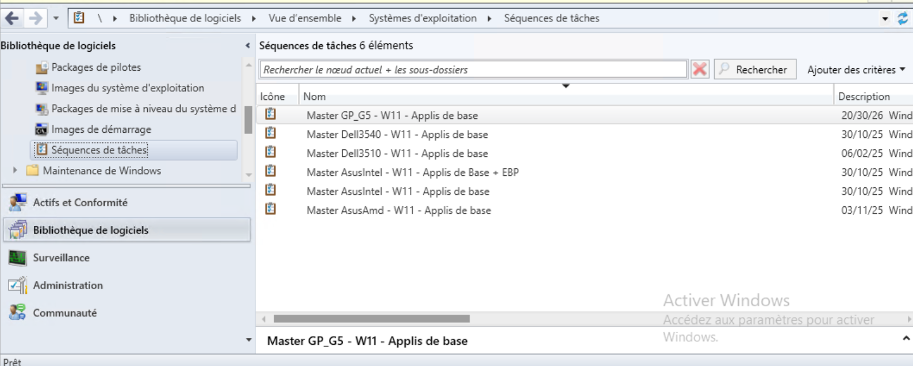
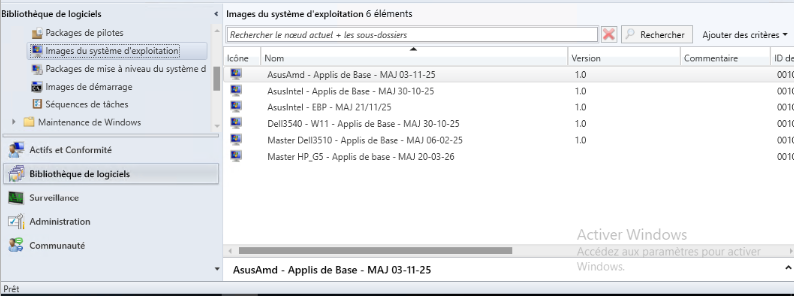

Au sein du service informatique de l'E2SE, j'utilise SCCM (Microsoft Configuration Manager) pour automatiser le déploiement des systèmes d'exploitation sur les 550 postes du parc. Je gère ce processus de A à Z : de la création de l'image système (Master) jusqu'au déploiement sur les postes via le réseau PXE, en passant par la configuration des séquences de tâches.

